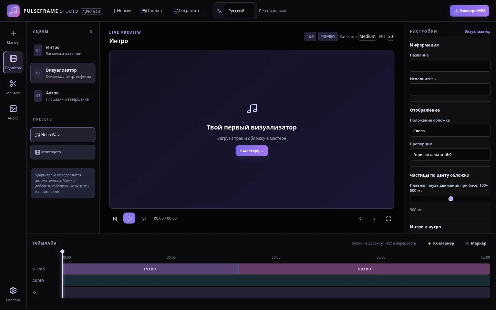
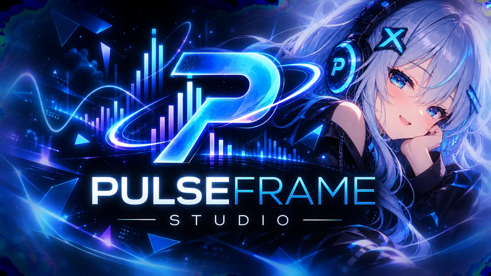
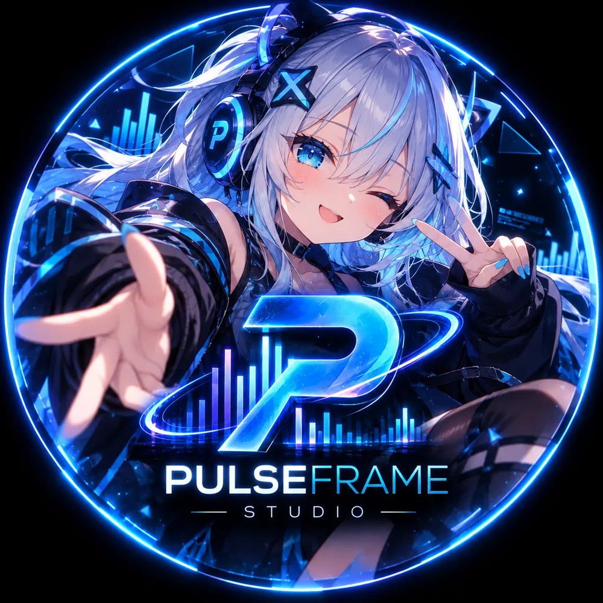
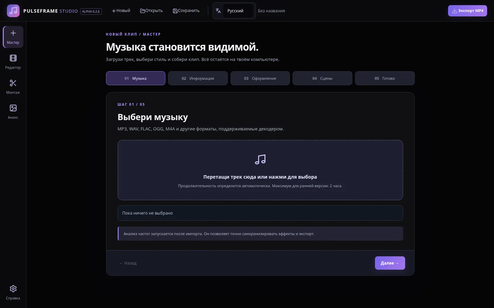
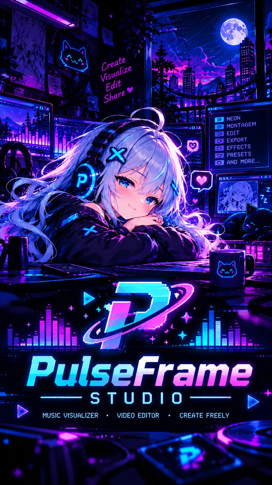

01 / EDITOR
Монтируй под бит.
Montagem Editor: два основных видео, до 20 нарезок, переходы, повторы и таймлайн с управлением мышкой.

СКРИНШОТ ПРЕДЫДУЩЕЙ ALPHA
Превращай музыку в визуальные истории. Неоновые волны, монтажные эдиты и новый Retro TV, который будто телепортировался из 90-х.

Выбирай настроение трека, меняй сцену и смотри, как оживает картинка. Поиграй с демо прямо здесь.
Новый Retro TV превращает клип в эфир из параллельных девяностых. Телевизор, VHS-интро, живые сцены и финальные титры: целая история для одного трека.
Pulsy Jessica теперь бегает, прыгает и собирает кольца. В приложении тебя ждут три уровня: Neon City, Circuit Factory и Sky Gardens.

Собери кольца и доберись до портала! ← → двигаться, пробел прыгать, Shift ускоряться.
От первого импорта трека до финального ролика: всё, чтобы делать музыку видимой без подписок.
Montagem Editor: два основных видео, до 20 нарезок, переходы, повторы и таймлайн с управлением мышкой.

Вертикальные анонсы 9:16 для Shorts и TikTok: музыка, дата релиза, эффекты и экспорт в 1080×1920.
Без подписок и платных уровней доступа. Исходный код проекта опубликован под лицензией MIT.
GITHUB ↗Локальная работа с медиа, сохранение проектов .pulseframe и MP4-экспорт через Electron + FFmpeg.
Настоящие скриншоты интерфейса из предыдущей Alpha. В v0.2.8 отдельные экраны и оформление могут отличаться.

Скачай исходную Alpha-сборку, распакуй в отдельную папку и запусти на своём компьютере. Бесплатно, без регистрации.
Это исходная Alpha-сборка, не установщик. Для десктопного запуска нужен Node.js, а для MP4-экспорта FFmpeg. Предпросмотр HTML не экспортирует MP4.

PULSY JESSICA / THE MASCOTPulseFrame Studio создаёт независимый разработчик TihomirovSmile из Украины. Проект растёт благодаря экспериментам, AI-assisted разработке, баг-репортам и людям, которым нравится делать необычные вещи.
Здесь важны творчество, открытый код и свобода пробовать новое. Даже если иногда новая фича случайно превращается в полноценную аркаду.
Самое важное перед первым запуском.
Да. Программа распространяется бесплатно, а оригинальный исходный код опубликован под лицензией MIT. Поддержать разработку можно добровольно через Ko-fi.
Нет, текущая Alpha распространяется как исходная сборка. Для запуска на компьютере требуется Node.js и установка зависимостей. Подробности в README на GitHub.
Нет. HTML-предпросмотр предназначен для визуализации и тестирования. MP4-экспорт доступен в настольном Electron-приложении через FFmpeg; совместимость требует проверки на вашей системе.
В приложении это скрытая пасхалка, которая открывается после прохождения двух этапов мини-игры «Звездопад». Игровая мини-демонстрация выше создана специально для сайта.
Формат .pulseframe остаётся на схеме 2. Новые настройки Retro добавлены как необязательные поля. На Alpha-стадии всё равно рекомендуем резервные копии важных проектов.